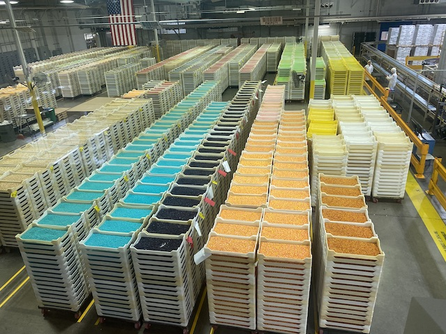
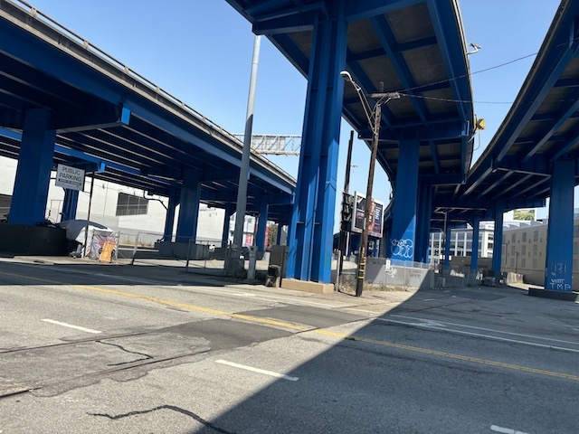
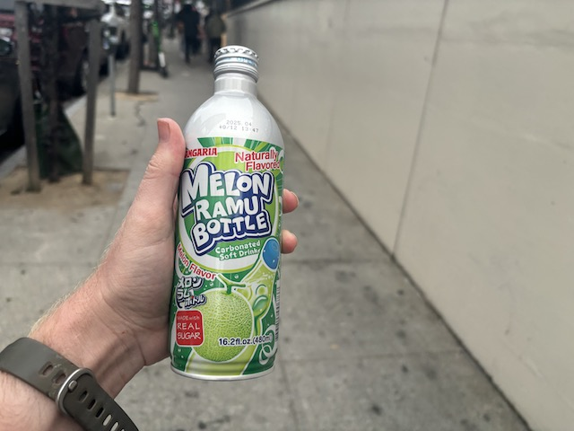
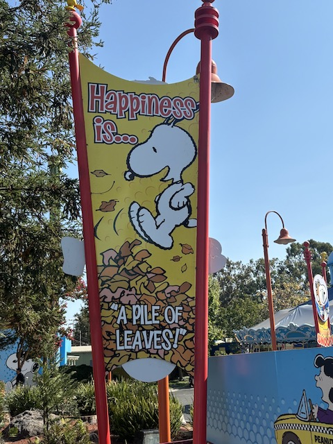

| |
NorCal 2024
 All right. So time for another long NorCal trip. It has surprisingly been a while since our last serious NorCal trip. Yeah. I had gone up for a day to hit up a couple new rides. But it was time for us to head on back up. This was a trip that.....was meant to be earlier, but....yeah. Life and money kept delaying and delaying until....f*ck it! And this trip starts off doing something I've wanted to do up in NorCal for a LONG TIME, but always procrastinated until now.
All right. So time for another long NorCal trip. It has surprisingly been a while since our last serious NorCal trip. Yeah. I had gone up for a day to hit up a couple new rides. But it was time for us to head on back up. This was a trip that.....was meant to be earlier, but....yeah. Life and money kept delaying and delaying until....f*ck it! And this trip starts off doing something I've wanted to do up in NorCal for a LONG TIME, but always procrastinated until now.
That's right! We're gonna hang out at the Jelly Belly Factory! =)
Love the giant inflatable Mr. Jelly Belly flying above the entrance.
Ooh. Love the Jelly Belly artwork they have here.
The burger may be shaped like a bean, but it's just an ordinary burger shape-aside.
Luckily, the Jelly Belly factory is not making a political statement with their constant praise of Ronald Reagan. All the praise is due to the fact that Ronald Reagan was a huge fan of Jelly Bellies back when they were a small little company, which is essentially the catalyst that made them the king of Jelly Beans and dominate that market. He sort of made the company what they are. That's why you keep see Ronald Reagan here. Not for any of his actions as president (Most overrated president of all time and MUCH worse than people claim).
Ready to start our self-guided tour of the Jelly Belly Factory.
So this is basically, the real life equivelant of Willy Wonka & the Chocolate Factory. If said factory actually had to exist in the real world and actually follow OSHA regulations (childhood fantasy officially ruined).
They have these smelling tubes where you can smell the smells of the Jelly Bellies. Very pleasant.
Even on the factory floor where nothing but work occurs, they still care to add some theming in the form of several Mr. Jelly Bellies, as well as some fake giant jelly bellies.
So part of the tour included this game, Bean Blitz. It's basically being a virtual goalie and try and block the virtual jelly bellies. I may SUCK as a goalie, but I still had fun making an ass of myself here.
 Aww. I remember enjoying those sports beans back when I was into running (really need to start again. Just as soon as I have time).
Aww. I remember enjoying those sports beans back when I was into running (really need to start again. Just as soon as I have time).
So I see that Jelly Belly has just taken the Bertie Botts Every Flavor Beans (well, all the gross ones at least) and just made their own.....Disgusting Beans as a sort of party dare (maybe they did this to try and keep the gag of Bertie Bott's every flavor beans while distancing themselves from Harry Potter due to J.K Rowling's transphobia). I have yet to try any of these since.....I have no desire to taste jelly belly flavors such as rotten egg, soap, and vomit. No thanks.

Oh boy! I see a ton of Jelly Bellies ready to be shipped out. =)
 List of all the normal flavors people actually like to eat.
List of all the normal flavors people actually like to eat.
"Thanks for visiting the Jelly Belly Factory you guys. Now please don't eat me."
Wanna buy some jelly belly f*ckups?
So on top of the Jelly Belly Factory, there's also the Jelly Belly Museum on the other side of the parking lot. Also pretty fun. Oh, and seeing all these Jelly Bellies having to dance the Chorus Line was....pretty.....I'm not sure if this is more cool or awkward. Probably more awkward since....they never danced to the actual music.
I'm really glad we stopped here. Very fun place to spend a couple of hours. Definately recommend this place. =)
Why are we at the Verizon store on this trip? Long story short, my old phone didn't have nearly enough storage space. Would save money switching to Verizon and being on my friends plan. Kept procrastinating due to bad finances. Suddenly realized that I needed all that storage for this trip. So I rushed to do everything beforehand. But naturally, I failed and had to spend trip time sorting this stuff out.
Though that only delayed us into experiencing the 2nd worst part of the trip. Warning. Incrediblecoasters rant incoming.
So naturally, this trip also was meant to include SFDK, since....not only do they have a new credit (a credit in CA that's not a kiddy coaster that I don't have!? I need it now!), but it'd also be nice to get some rides on Medusa and Joker. Unfortunately, I was screwed out of that. You see, Six Flags changed their season passes for 2024. Up until then, a Six Flags pass.....just got you into everywhere. But in 2024, they changed that and now....you apparently need the Diamond Elite Season Pass to go anywhere not your home park. And that Gold Pass I got, not even the lowest tier, cause I presumed that I didn't need to pay more for valet parking, bigger food and merchandise discounts, and the complimentary fastpass that while was EXTREMELY helpful outside my home park, felt unnecessary. So I downgraded. But nope. Because I didn't bother reading the terms and conditions, I missed the part where they revoked the all park pass they ALWAYS had and said that now I basically only have a SFMM season pass for 2024. F*cking joy. >=( I know I was told this way after the fact, but was kind of shocked. I figured I'd test it out and see what happens. They let me park, so I figured I was good. NOPE!!!! Screw you Six Flags! And I am NOT forking out the money for a ticket! Especially since I only need a couple hours here anyways! Gonna go get some rides on Scream, Twisted Colossus, Crazanity, and Electric Eel out of spite now!
And the most depressing part of all? Even if they didn't do this change to the pass and I was able to get in, I'd instead be ranting about the HORRIBLE operations and HORRIBLE management that SFDK is facing this year! Seriously! The Flash (V2) is closed for the ENTIRE season. I'm genuinely worried for that ride and have a feeling Six Flags might decide to remove it soon (I REALLY hope I'm wrong). Nearly EVERY major flat ride from the back has since been removed. Also closed were the following. Boomerang, Kong, Wonder Woman, and SIDEWINDER SAFARI!!! Wouldn't have even gotten the stupid credit if they didn't f*ck around with my season pass! And Medusa, Joker, Batman, & Superman are ALL OVER AN HOUR (Medusa & Joker over 2)!!! FUCK THAT NOISE (No censors for the strongest anger)!!! Almost makes me glad I was prevented from going in due to just how HORRIBLY the park is being run this year. Ugh. Luckily, all this will be avoided in 2025 due to the Six Flags-Cedar Fair merger. And yeah. I'm gonna be getting a combo pass to get into ALL of them. So that's good at least.
To make up for the time that would've been spent at SFDK, we decided to go hiking at one of the parks in Napa (Hey Alex! How's it going?).
I'm sure this'll be a great place to take a nao. Nothing bad could happen here. ;)
 Hmm. I'm not sure what it is, but the Napa residents seem much more pleasant on this trip.
Hmm. I'm not sure what it is, but the Napa residents seem much more pleasant on this trip.
 Sunset right on the Napa River.
Sunset right on the Napa River.
Decided to do dinner at Mountain Mikes. Hey. It's a local place, and I remember eating here and enjoying it in the past.
Yeah. The pizza here is pretty good. But....*phew* This place is NOT cheap.
Ugh. Why are we at PepBoys this morning? Well, on the drive up to NorCal, my check engine light came on. GOD F*CKING DAMN IT!!! NOT NOW!!! NOW I HAVE TO DO CARWORK AWAY FROM MY LOCAL MECHANIC!!! AND I HAVE TO USE F*CKING PEPBOYS (Overpriced bastards)!!! Luckily, it was just an oil change. Oh, and they also mentioned that my car needed some more work. But.....not at PepBoys! I'll take it to my mechanic when I come back home! >=(
All right. Day 2 of the trip. And....I'm REALLY glad to be back here.
Hmm. I wonder if SunSplash has added a new slide since my last visit (I can't believe that was 7 years ago! It does NOT feel like it!)?
But first, lunch. I know that it's a rarity for me to eat at parks. ESPECIALLY at a place like SunSplash instead of just going to one of the fast food resteraunts nearby. However, when writing my SunSplash review, I learned about the Iceberg Drive Inn, and after seeing their milkshakes. HOLY CRAP!!! THOSE LOOK GOOD!!! I HAD TO TRY ONE!!!
 Bad news? I was never able to eat the actual food of the Iceberg Drive Inn. They didn't actually sell their burgers here. Bummer, cause I did want to try that too. Not that it really mattered since.....I had no appetite and wouldn't have been able to eat it. So it worked out. And the milkshakes were what I really wanted. As for the shake, it was good. I liked it. But it wasn't quite as good as I was hoping. This was honestly, about on par with a blizzard from Dairy Queen.
Bad news? I was never able to eat the actual food of the Iceberg Drive Inn. They didn't actually sell their burgers here. Bummer, cause I did want to try that too. Not that it really mattered since.....I had no appetite and wouldn't have been able to eat it. So it worked out. And the milkshakes were what I really wanted. As for the shake, it was good. I liked it. But it wasn't quite as good as I was hoping. This was honestly, about on par with a blizzard from Dairy Queen.
Good news? This thing was FREAKING HUGE!!! Far bigger than I expected. I was amazed at how much milkshake they give you. To the point where I was barely able to finish it and was stuffed just from the milkshake alone. It almost makes it not horribly overpriced. Key word being almost. ;)
 Waterpark time. And let's start off with their new since my last visit slide. Zoomerang. Another water coaster. And this one was AWESOME!!! Definately one of the better ones, only behind Wildebeest, Mammoth, and Pelicans Plunge. It has some fun drops and decent laterals. The only real problem is that the slide is on the short side. Definately going on our Top 10 Water Slides.
Waterpark time. And let's start off with their new since my last visit slide. Zoomerang. Another water coaster. And this one was AWESOME!!! Definately one of the better ones, only behind Wildebeest, Mammoth, and Pelicans Plunge. It has some fun drops and decent laterals. The only real problem is that the slide is on the short side. Definately going on our Top 10 Water Slides.
Riptide may not be the hot new stuff, but it's still a really fun water slide. Seriously, that tantrum is definately strong.
I know the trap doors tend to lose their shock with time, but they're still a lot of fun.
 Maybe it's because I rode Zoomerang earlier, but I suddenly realized that the LIMs on this slide kind of hurt my ass. Still a really fun slide. Just have to slightly raise my ass whenever going uphill. =)
Maybe it's because I rode Zoomerang earlier, but I suddenly realized that the LIMs on this slide kind of hurt my ass. Still a really fun slide. Just have to slightly raise my ass whenever going uphill. =)
 Still love the airtime this slide provides.
Still love the airtime this slide provides.
I know Dark Holes isn't one of the amazing slides brought up when raving about SunSplash. But it's still a really fun slide I enjoy checking out everytime we hit up SunSplash.
 Revolution (and the Storm) are both fun. But let's be real. Neither hold a candle up to Vortex (sorry Zoomerang. Still my favorite slide at SunSplash).
Revolution (and the Storm) are both fun. But let's be real. Neither hold a candle up to Vortex (sorry Zoomerang. Still my favorite slide at SunSplash).
Had a blast at SunSplash. Really hope my next visit will be sooner than 7 years.
After 8 years, we were definately overdue to go back here. Hmm. For some strange reason, I have the urge to rob Squeeze Inn. I wonder why that could be?
Yes. That's why we're here.
It may look gimmicky and only a place you eat at for the sake of getting a good shot for Instagram, but even without the cheese skirt (f*cking love that), the burger itself is just really delicous. I want to eat here far more often when coming up to NorCal (despite my body hating me for it since....this place is NOT healthy).
OK. So next day of the trip, we're heading into San Francisco. Lyfting in (I'm NOT playing the impossible game of looking for parking in San Francisco), we stop because the road is blocked by a constant stream of runners since....apparently a marathon is going on. Not only does our driver NOT detour, he also refuses to let us out. Keeping us trapped in his car for 20 minutes just waiting for every single runner to pass. I know I'm pretty generous to Rideshare drivers since I used to be a Lyft driver myself. But this (along with being rude, unfriendly, and playing bad music) is NOT OK. So congrats dude on being the first rideshare driver to get a bad rating from me.

So this is not gonna be a standard visit to San Francisco, where we explore cool stuff and do some touristy stuff and eat out at nice resteraunts. Nope. We're here to mainly see a friend. And....between us being broke, and him being broke, we had to essentially just have an ordinary day, doing things we would usually do on a day off, only in San Francisco instead of home.
For lunch, we just went to Costco. I know I was initially against having Costco membership since....I don't think I spend enough there to outweigh the membership. However, a friend who at the time, was living with us, gifted Jason and I membership. And it's totally worth it for ONE REASON. The food court. Being able to avoid going to a fast food place and instead just going to Costco and grabbing the $1.50 Hot Dog special instead has MORE THAN made the membership worth it for THAT ALONE!!! And I will admit. It is nice to go once in a while and buy certain items in bulk (Toiletries, Sparkling Water).
 Hey. We should stop here. I bet that flag symbolizes fun. =P
Hey. We should stop here. I bet that flag symbolizes fun. =P
Chilling and watching a movie is not what you think when you think of going to San Francisco. But we still had fun. Plus, we were here SOLELY to hang out with a friend, rather than explore San Francisco, which I've done repeatedly.
OK. Fine. We can have a little bit of touristy fun.
OK. The one slightly touristy thing we're gonna be doing in San Francisco is exploring Japantown.
Not gonna lie. I had A LOT more fun last time I was here.
I know part of it is the fact that since I was last here on the Glass Beach Roadtrip, I've actually been to Japan, which no offense, but puts it to shame since....real thing. But I think being more willing to spend money, eat out, and be silly also just lead to having a better time as well.
Really need to check out more Miyazaki films. Only seen 3, which is FAR too few (My Neighbor Totoro, Kiki's Delivery Service, & Spirited Away). Again, when I have more time.
HOLY CRAP!!! I FOUND POCARI SWEAT IN THE JAPANESE CONVIENCE STORE!!! I was gonna get one today. However, I decided against it. I have had some since I was in Japan. Jason bought some for me off Amazon after hearing me praise the drink. Also, apparently some Daisos carry it. Certainly not the one in Long Beach (unless that recently changed since my last time browsing there).

Instead, I decided to get Fanta Melon instead. Both because I hadn't had that since I was in Japan, but also, I was more in the mood for that. And now, the ONLY Japanese staple drink I haven't had since being in Japan is Match. And from what I can tell, that drink is LOCAL!!! You want Match in America? Be prepared to pay $50 for a bottle off Ebay, plus shipping. I love Match, but No.
Dear Fanta, please bring the melon flavor to America. That is REALLY F*CKING GOOD!!!
 All right. After the failure of getting into SFDK, time for this trip to actually have a theme park with our visit to California's Great America.
All right. After the failure of getting into SFDK, time for this trip to actually have a theme park with our visit to California's Great America.
Time to get party rolling with some rides on Gold Striker.
 Still the best wooden coaster in California and the 2nd best GCI (Thunderhead is #1).
Still the best wooden coaster in California and the 2nd best GCI (Thunderhead is #1).
A: Gold Striker is the ONLY ride in the park with a line. Everything else is either dead or reasonable. B: This isn't quite as bad as it looks. Yeah. It's not fun waiting 25 minutes, but at least that's.....tolerable. Especially with a podcast.
 Bad news, Gold Striker has gotten rougher. Not painful rough, but you definately notice it bounce more and....it's CLEARLY a wooden coaster.
Bad news, Gold Striker has gotten rougher. Not painful rough, but you definately notice it bounce more and....it's CLEARLY a wooden coaster.
 Good news. Gold Striker is still mean, aggressive, and crazy. And I love that about it.
Good news. Gold Striker is still mean, aggressive, and crazy. And I love that about it.
Fun story. They do assigned seating on Gold Striker. I was assigned to Row 2. DAMN!!! SO CLOSE TO A FRONT ROW RIDE!!! Well, it turns out that the girl in front was too afraid to ride in the front row. So she and her boyfriend asked if we could switch so the girl wouldn't have to sit up front. HELL YES!!! Thanks random girl. And yeah. Gold Striker is even better in the very front. =)
Ooh. Random flat ride they must've added since my last visit. Fun, but nothing special.
Unlike another certain theme park in NorCal, nearly everything is open at CGA. Only thing they had closed for today was Tiki Twirl.
Yeah. We gotta get on this today.
I sort of stopped thinking about this ride due to Wonder Woman being at my home park. I remember really liking it when I was last here. But man. This was even better than I remember! =D
It's still fast, intense, strong, very whippy, and yet, incredibly smooth!
I was so pleased with this that I'm starting to second-guess myself about whether I actually prefer Wonder Woman to this.
Very bummed that Beserker broke down on us and never reopened for the rest of the day. So....you probably know that Cedar Fair announced that they plan on tearing out California's Great America before 2030 because.....*sigh* The park sits on very valuable land (Cause Santa Clara so desperately needs more office space. Especially with more and more people working from home. *rolls eyes*). Very pissed about this, and as such, am making sure to get in many visits before Cedar Fair decides to go full Wild Rivers on this place. And....sadly, a lot of the stuff here will be scrapped. Railblazer will probably be saved, as will many flat rides, and Psycho Mouse would be an easy relocation. Demon & Grizzly are 99.9% getting scrapped. No real loss there. Fingers crossed about new homes for Gold Striker & Top Gun (though I am honestly not optimistic about those, though I'd LOVE to be wrong). I bring this up because I think California's Great America might possibly have the last Bayern Curve left in the world. And when the park closes (I'm 99.9% sure this ride isn't getting saved), this type of ride will be extinct. So I'm really bummed about this being closed today.
Oh look. A shoot the chutes ride. Fun ride, but it's not gonna cool you down.
So I guess California's Great America is having some Mardi Gras festival going on. All I noticed was a few tacky pieces of theming just plopped down like I'd place if I was playing RCT. Oh well. Better than nothing I guess.
"Anyone have a giant needle I can use on the giant voodoo doll?"
One final major coaster that's a must-hit at CGA.
It's sort of like Batman the Ride, if B&M was forced to take the feel of the ride, but also force it to have its own custom layout.
Please find this a new home Cedar Fair (or Six Flags). It's a solid B&M Invert
 Yo! Keep jazzing on Alligators! =)
Yo! Keep jazzing on Alligators! =)
 Hello random fountain.
Hello random fountain.
I know I've made it clear I want to start checking out more of the water parks in America since....I've nearly hit all the major parks in America (though I still have to revisit many of them for major new coasters). So we might as well explore the CGA one while we still can.
So I tried checking this place out in 2017. But only managed to ride one slide due to the anxiety of leaving my shorts on a chair and freaking out in line about possible theft (got a locker this time). Thunder Down Under (Now Mission Falls) was the one slide I did last time. And....it's still a fun slide. Though being at SunSplashn a couple days before sort of dampers it. Not gonna lie.
This time, we checked out all the water slides. This one wasn't anything special. But at least we're having some fun here today.
Definately one of the tamer family raft slides. This DESPERATELY needed some fat people to speed it up.
And since I was last here, CGA expanded the water park, so that it's a 3 hour ordeal instead of just a 1.5 hour ordeal. And it's time to check out those new slides.
These two slides were also part of the expansion. Feeding Frenzy was a toilet bowl, which.....I honestly didn't know existed until today. I guess I just ignored the promotions. This was a nice surprise for me, even if it was pretty tame (even by tube toilet bowl standards. Get a Body Bowl if you really want to wow me). And then there's Barrcuda. Fun little slide with a big drop at the end. Really reminds me of the old Surf Rider Rapids from the now defunct Soak City Palm Springs (R.I.P), only without the terrain.
One the one hand, I was really happy with this slide. I love the trap doors, and this one felt like a complete slide instead of just a drop and a helix like the usual waterboarding trap door slides. I liked that. On the other hand, this thing was a BACKSCRATCHER!!! A REALLY BAD BACKSCRATCHER!!! I did NOT like that.
This may not have been the best water park ever, but it's still a fun little water park with some decent slides. I definately would appreciate this if I was a NorCal local, and am glad I checked it out (before the park closes and the water park becomes scrap).
*gasp* Are we gonna do some credit whoring today?
Nope. I may be a credit whore and need this credit. But this requires a child, and I draw the line there.

Not as adult. Just means more dumb work to do. >=(
It may not run a great program, but I'm still impressed that a breakdance is one of the rides they have in their kids area.
Riding this random pumpkin ride for a certain someone (BTW, these DO NOT look like pumpkins. AT ALL!!!)
 Yeah. It's time that Jason managed to ride a coaster today.
Yeah. It's time that Jason managed to ride a coaster today.
I know its just a Wild Mouse, but it still seems to be running well. So that's good.
If you're sad about most of the rides here closing, well....you can take comfort that this is one that has a pretty good chance of finding a new home.
Cha-Ching for a certain someone.
Oops. Almost forgot about Drop Zone.
Fun ride. But there will be plenty more Intamin 2nd generation drop towers to fill the void left by this ride.
So I've naturally hated on Grizzly for all these years and for a while, had it on the Top 19 Worst Coasters List (It's been removed since....Grizzly may suck, but not enough to be on this list). Then I suddenly realized that I had been judging Grizzly wrong for all these years. Instead of judging it as a thrilling adult coaster, which it TOTALLY gets an F at, I should be judging it as a family coaster since....Grizzly is about as thrilling as a mine train. And when you compare it to those rides, instead of large adult coasters, it suddenly seems decent. So naturally, I tried to convince Jason to ride since....it's a PERFECT fit for him.
Unfortunately, he was NOT in the mood. Ugh. So I skipped it since....this is NOT something I want to do alone since....it's a family coaster. Hopefully you can do Grizzly when we come back.
Jason is driving? Uh oh. This is gonna end badly.
 I'm glad we rode the car ride as there are some GREAT shots from it.
I'm glad we rode the car ride as there are some GREAT shots from it.
I really wish there was a train in this photo. =(
 *Sigh* Might as well while we're here and it has no line.
*Sigh* Might as well while we're here and it has no line.
Much of the special effects that made this more fun are gone, with only the soundtrack still remaining. But hey. At least the ride is still smooth. That's good at least.
Oh yeah. Time for some Railblazer rerides. =)
Taking the skyride to the other side of the park.
Getting some more whippiness from Top Gun before we head out. Hoping to get more in the future (from another CGA visit, or at least from the ride in a new home *fingers crossed*)
Holy Crap! Almost forgot about poor Patriot!
It's a fun ride and all. But I won't be shedding any tears if they decide to scrap Patriot.
Yeah. We are NOT leaving without getting a Gold Striker reride.
You know? I had never actually ridden the carousel here. Might as well check that out since it's a very pretty double decker carousel.
Something tells me that this carousel is gonna wind up at some city park or mall in the future.
Hey! It's that stupid stadium that caused so much controversy and drama with this park *rolls eyes*.
And finally, we reach the end of the trip and the worst part of the trip (No. Not the end). So remember how at Pepboys, they told me my car needed work, but I said I'd do it when I got home? Well....it turns out my car had other plans and.....I had some certain car issues pop up in Los Banos (AKA, the middle of nowhere). If this was in the daytime, I could've made this an easy fix. Unfortunately, car shops are all closed in the middle of the night. So I'm f*cked! I really don't have the ability to stay in a motel in the middle of nowhere and then spend all day next day getting it fixed. So against the advice of every mechanic on the planet, I just kept driving. Hoping to make it home and then take it to the shop the next day. Not the first time this happened as I had to drive from Glenwood Springs, CO to Ventura, CA with a broken splash guard as a suicide night (also against the advice of every mechanic). And that was actually successful. This time, we failed. Though we got a lot farther than most people, including myself looking back at it in hindsight, would've expected, actually making to SoCal shockingly. But....yeah. We HAD to stop in Van Nuys and then just.....spend the night at a gas station until we could get to a car shop right as soon as they opened. Paradoxically, despite postponing this car work that PepBoys warned me to fix because Pepboys is grossly overpriced, and having a major car breakdown in the middle of the night, I STILL managed to save money. Even if.....yeah. This was....while very memorable, also was VERY STUPID and VERY STRESSFUL. Not a fun night. >=(
Home
|